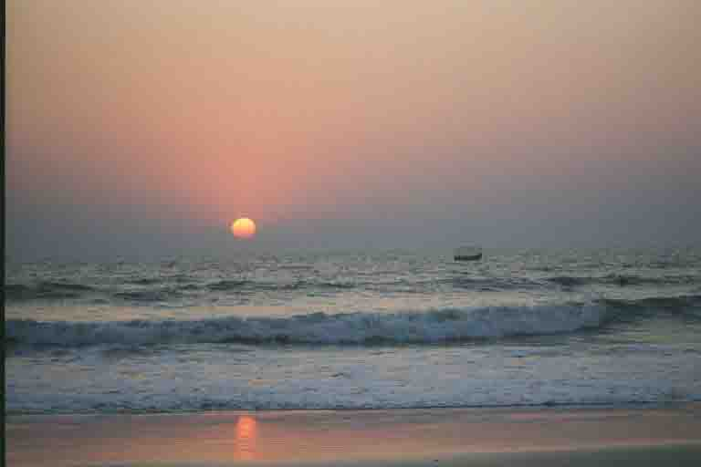

Goan Hospitality
Benaulim, Goa, India
Our first destination in Goa was a town called Panjim. The old part of town, where we stayed, still oozed with old Portuguese charm. We could have been in a small town in Portugal! It was just a little rougher round the edges, which somehow adds to the character and ambience. Our hotel was an old Portugese house. We had a cool room with old dark wood furniture, a wonderful four poster and a comfortable planters chair on the large balcony in which many a hot afternoon was spent relaxing and reading.
After a few days we decided to move down the coast to Benaulim, a quiet lazy town set back from a wonderful beach. Our first day was spent lounging under an umbrella (so as not to turn into a BBQ'd lobster) outside a great beach shack called Tito's. The day was long and warm, the sky blue and clear, the sea cool and comforting - just what the doctor ordered. We watched a magnificent sunset while siping feni cocktails (feni is a mindblowing local liquor made from distilled cashews) and tucking into the best red snapper either of us had ever tasted. The second day was the same as the first and the third wasn't much different. We quickly decided to cancel all plans to move further south to Kerala (we'll have to go there another time) and to stay put for a couple of weeks. But we weren't going to spend all the time on the beach - very tempting though it was.
For a days adventure we hired a moped and set off to drive the back roads to Palolem (sometimes called Paradise Beach). It only takes a few minutes to get away from tourists and hotels and we were soon in the countryside where time has definitely stood still. We rode along deserted roads for many kilometres - just us and the heat and dust of the countryside. We quickly discovered that the map we had was worse than useless (thanks again to Lonely Planet) and that signposts didn't really exist. Luckily the Goan people are incredibly friendly and helpful and when we reached a crossroads they seemed happy to point us in the right direction. We went through many small villages, crossed a river on a ferry and come to the really hilly part. The old moped spluttered up most hills but this one proved much too steep, so Sue ended up walking and I waited for her at the top! We had lunch in Palolem while looking at the great beach but decided it was far too busy and realised why the locals called it Paradise Lost.
We did a few more day trips on the trusty old moped, probably the best one being a visit to an old Portuguese landowner's mansion in Chandor. The house was split into two wings and each owned by different families (distantly related). Each contained a magnificent ballroom with Italian marble floors and Belgium glass chandelliers. Sue particularly liked the huge airy libraries containing the largest private book collaction in Goa. But at the end of each day we always returned for a sunset drink on the beach at Tito's.
Staying in one place for a fortnight was a real novelty for us on this trip. We got to know the area quite well, the good restaurant (Tito's, on the beach - run by Lesley and Catherine, a Goan couple. The cook, Felix, came up nightly with all sorts of tempting delights, like lobster thermidor and the biggest tiger prawns you've ever seen!)!, the local shop owners, where to get a good cheap haircut and where to get my clothes patched after the laundry lady burnt my trousers while ironing. We discovered theat the noisy man on his bicycle sounding his hooter at 7am was in fact the breadman. We bought a newspaper from the same guy in the evenings. The first time Sue aked him why he charged 10 Rupees for a paper that should be 2.50 Rupees he replied, 'I want to make some money'. Fair enough - it's hard to argue with that! Later in the week Sue informed him that he must be the most expensive newspaper salesman in Goa. Complimented he replied 'Thankyou Madam, but just the other day a gentleman said that I must be the most expensive in the whole of India'.
After a few days we decided to move down the coast to Benaulim, a quiet lazy town set back from a wonderful beach. Our first day was spent lounging under an umbrella (so as not to turn into a BBQ'd lobster) outside a great beach shack called Tito's. The day was long and warm, the sky blue and clear, the sea cool and comforting - just what the doctor ordered. We watched a magnificent sunset while siping feni cocktails (feni is a mindblowing local liquor made from distilled cashews) and tucking into the best red snapper either of us had ever tasted. The second day was the same as the first and the third wasn't much different. We quickly decided to cancel all plans to move further south to Kerala (we'll have to go there another time) and to stay put for a couple of weeks. But we weren't going to spend all the time on the beach - very tempting though it was.
For a days adventure we hired a moped and set off to drive the back roads to Palolem (sometimes called Paradise Beach). It only takes a few minutes to get away from tourists and hotels and we were soon in the countryside where time has definitely stood still. We rode along deserted roads for many kilometres - just us and the heat and dust of the countryside. We quickly discovered that the map we had was worse than useless (thanks again to Lonely Planet) and that signposts didn't really exist. Luckily the Goan people are incredibly friendly and helpful and when we reached a crossroads they seemed happy to point us in the right direction. We went through many small villages, crossed a river on a ferry and come to the really hilly part. The old moped spluttered up most hills but this one proved much too steep, so Sue ended up walking and I waited for her at the top! We had lunch in Palolem while looking at the great beach but decided it was far too busy and realised why the locals called it Paradise Lost.
We did a few more day trips on the trusty old moped, probably the best one being a visit to an old Portuguese landowner's mansion in Chandor. The house was split into two wings and each owned by different families (distantly related). Each contained a magnificent ballroom with Italian marble floors and Belgium glass chandelliers. Sue particularly liked the huge airy libraries containing the largest private book collaction in Goa. But at the end of each day we always returned for a sunset drink on the beach at Tito's.
Staying in one place for a fortnight was a real novelty for us on this trip. We got to know the area quite well, the good restaurant (Tito's, on the beach - run by Lesley and Catherine, a Goan couple. The cook, Felix, came up nightly with all sorts of tempting delights, like lobster thermidor and the biggest tiger prawns you've ever seen!)!, the local shop owners, where to get a good cheap haircut and where to get my clothes patched after the laundry lady burnt my trousers while ironing. We discovered theat the noisy man on his bicycle sounding his hooter at 7am was in fact the breadman. We bought a newspaper from the same guy in the evenings. The first time Sue aked him why he charged 10 Rupees for a paper that should be 2.50 Rupees he replied, 'I want to make some money'. Fair enough - it's hard to argue with that! Later in the week Sue informed him that he must be the most expensive newspaper salesman in Goa. Complimented he replied 'Thankyou Madam, but just the other day a gentleman said that I must be the most expensive in the whole of India'.

Catherine and Lesley - the owners of Tito's beachshack

A beautiful Goan inlet on a moped journey down to Palolem in the far south of Goa

A Benaulim sunset from Tito's

Our neighbours in Benaulim